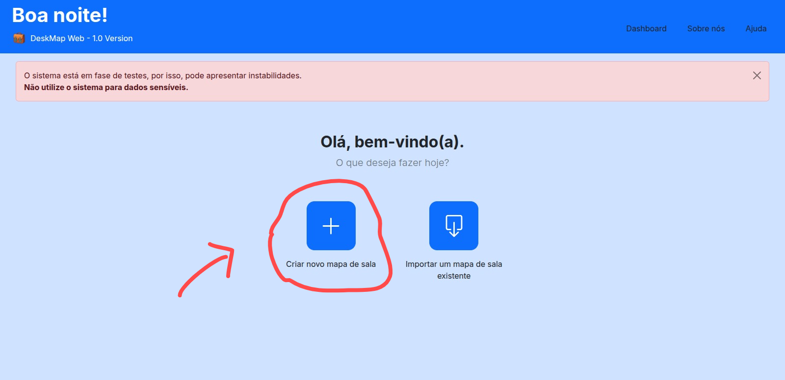
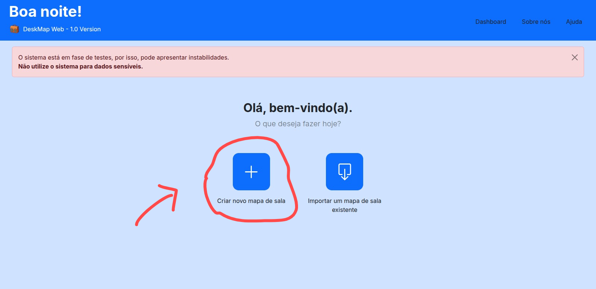

Para criar o mapa de sala da sua turma, é importante, antes de começar a criar, que você saiba quantas colunas/fileiras e carteiras tenham em sua sala.
Para criar o mapa de sala é muito simples, veja:

Para criar o mapa de sala é muito simples, veja:

This is the second item’s accordion body. It is hidden by default, until the
collapse plugin adds the appropriate classes that we use to style each element. These classes
control the overall appearance, as well as the showing and hiding via CSS transitions. You can
modify any of this with custom CSS or overriding our default variables. It’s also worth noting
that just about any HTML can go within the
.accordion-body, though the transition
does limit overflow.
This is the third item’s accordion body. It is hidden by default, until the
collapse plugin adds the appropriate classes that we use to style each element. These classes
control the overall appearance, as well as the showing and hiding via CSS transitions. You can
modify any of this with custom CSS or overriding our default variables. It’s also worth noting
that just about any HTML can go within the
.accordion-body, though the transition
does limit overflow.